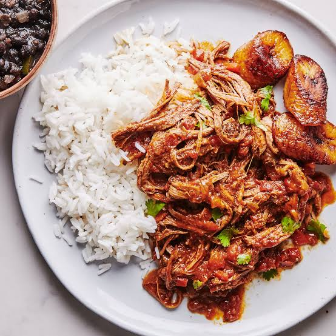
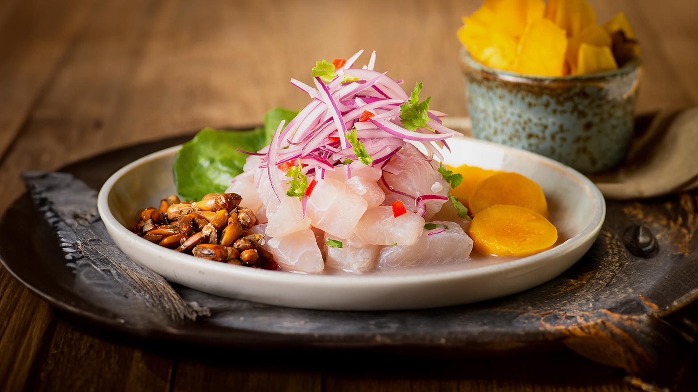
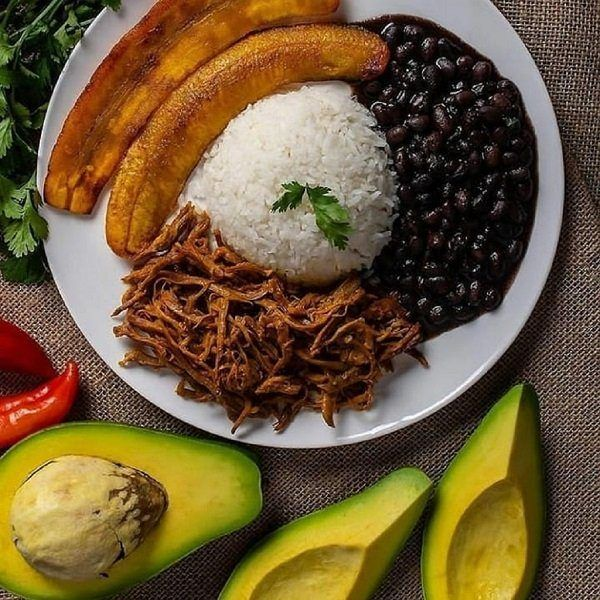
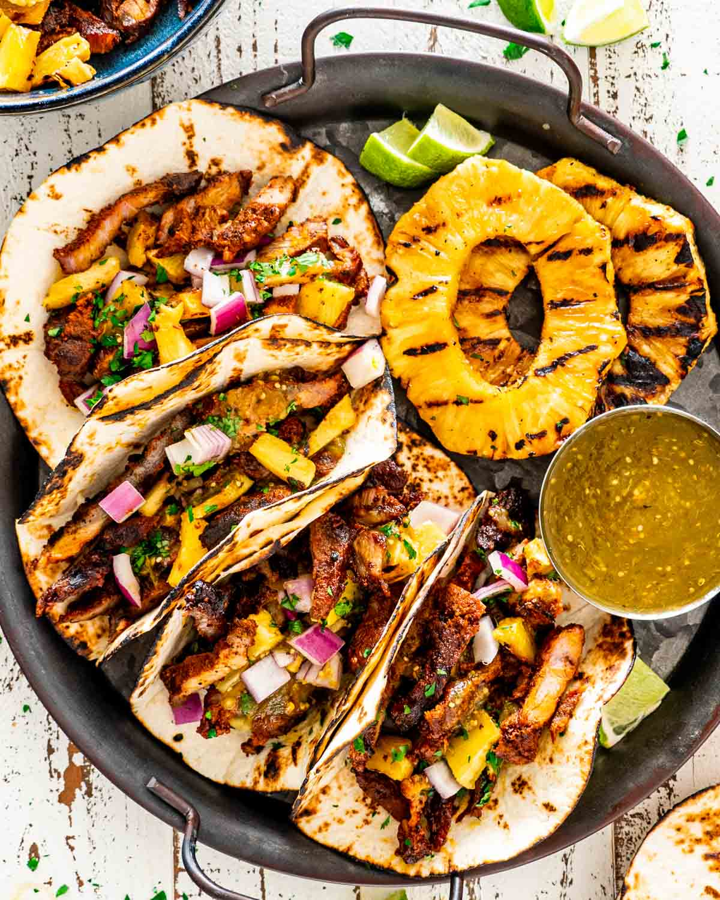
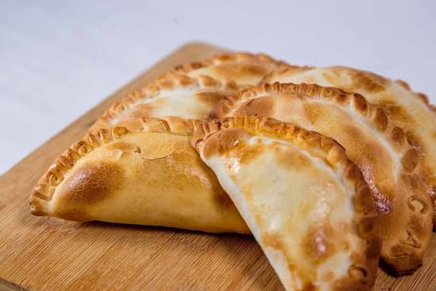
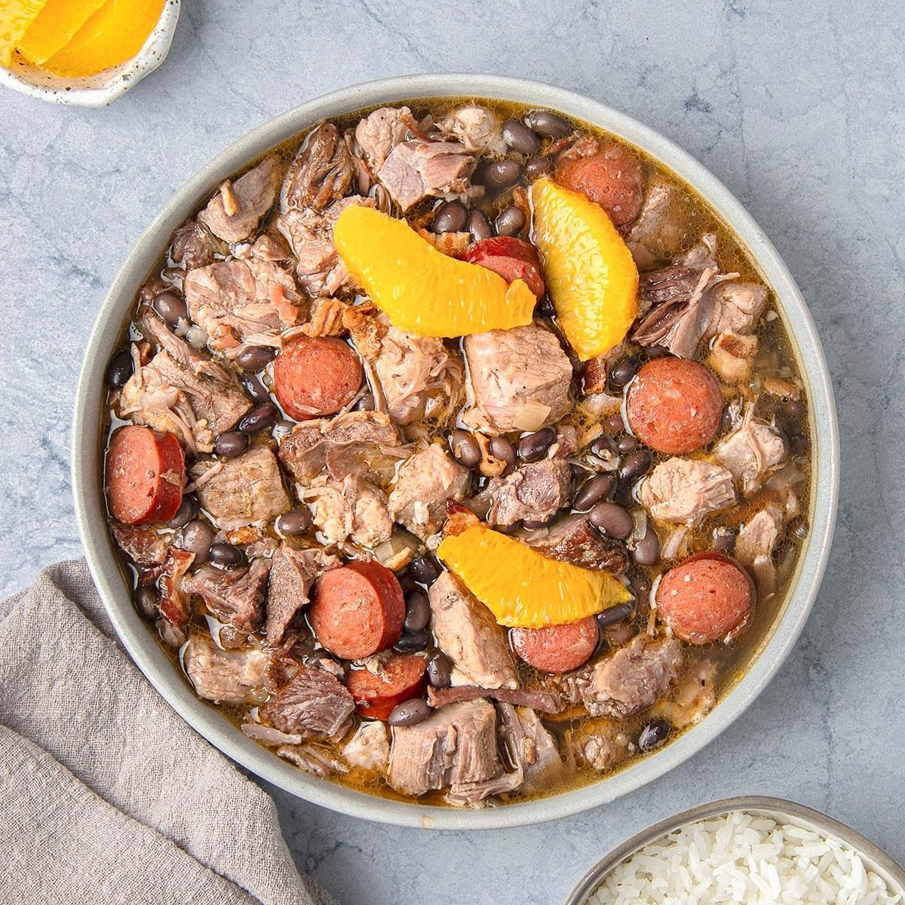
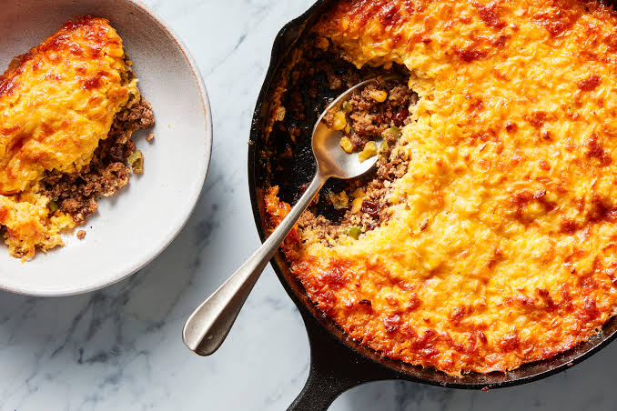

Our Menu
Discover the best flavors of Latin America with our dishes.
Cuba
Ropa Vieja
Slow-cooked shredded beef with vegetables and spices.45.99

Colombia
Bandeja Paisa
A traditional Colombian plate with beans, rice, plantain, and meat.39.99

Peru
Ceviche Peruano
Fresh fish marinated with lime, onion, and herbs.49.99

Venezuela
Pabellon
Venezuelan shredded beef served with black beans, rice, and plantain.45.99

Mexico
Tacos al Pastor
Marinated pork served with pineapple, onion, cilantro, and corn tortillas.36.99

Argentina
Empanadas Argentinas
Seasoned beef baked inside a golden, homemade pastry.34.99

Brazil
Feijoada
A comforting stew of black beans, pork, and traditional Brazilian spices.41.99

Chile
Pastel de Choclo
A baked corn casserole filled with seasoned beef, chicken, and olives.39.99
